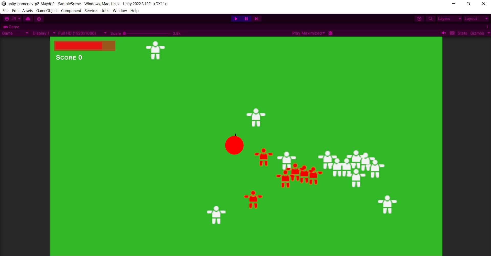

Top-Down Game

This game was purely created on in-game features and so the
visuals are lacking. This is done purposely to reduce the time
I have to spent on visuals instead of coding.
I learned the following skills during this project:
- Self-made animations
- Movement
- Enemy drop items
- Inheritance
- Unity events
Self-made animations
Even though I don't have a lot of visuals in this project. For
my sword slashing to work I had to make my own animation. Before
Working with this I wasn't this feature excited within Unity. So
after now having worked with it, I could solve a few problems I
had with earlier projects of mine.
Movement
For me, it felt like it felt like top-down movement was a lot
different from regular 2D movement. Also having de player face
the mouse at all times was something I never used before.
Enemy drop items
For this game I had the idea to not make score increase by killing
an enemy, but by picking up a coin they drop on death. For this
to work I just used the same code as I use for the enemy spawners.
Inheritance
Even though I have used inheritance a lot more throughout different
projects, this is the first time I used it while being aware what
inheritance is. So I implemented it a lot more and better within
this project.
Unity events
While following a tutorial, I came across Unity events. I had never
used these before, but as soon as I learned about their existence I
knew could use them quite a lot. So I later implemented them wherever
I could.